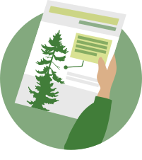
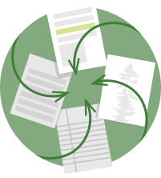
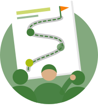
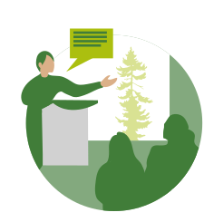
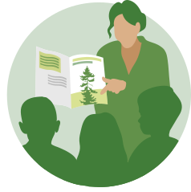
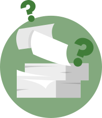

Nos services
Cinq façons de mettrela science au travail
Parcourir les 23 services ↓Vous hésitez ? Écrivez-nous →
Des visuels, des synthèses, des stratégies, des ateliers et des programmes d'apprentissage. Commencez par celui qui ressemble à votre problème.
Quel problème cherchez-vous à résoudre ?
Chaque domaine a sa propre page : pour qui, ce que nous produisons, et des exemples de nos réalisations.
-
01

Infographies et illustration scientifique
Appelez-nous si vous voulez que les gens comprennent votre science d'un coup d'œil.
-
02

Synthèse des connaissances
Appelez-nous si les données existent, dispersées dans des études que personne n'a le temps de lire.
-
03

Conseil stratégique
Appelez-nous si le changement exige plusieurs partenaires et un plan que tous s'approprient.
-
04

Ateliers et animation
Appelez-nous s'il faut réunir des gens dans une salle ou en ligne pour arriver à un résultat commun.
-
05

Éducation et vulgarisation scientifique
Appelez-nous si votre science doit atteindre les classes, les communautés ou le public.
Vingt-trois services, une ligne chacun
Filtrez par domaine. Chaque carte ouvre la description complète sur sa page.
Figure
À choisir quandUn visuel fort dans votre rapport, votre article ou votre demande de financement.
Voir le service → Infographies et illustration scientifiqueInfographie
À choisir quandVos résultats, pour les lecteurs qui ne liront pas le rapport complet.
Voir le service → Infographies et illustration scientifiqueNote d'information
À choisir quandPlus à dire que ce qu'une infographie peut contenir, en deux à quatre pages.
Voir le service → Infographies et illustration scientifiqueZine
À choisir quandDe la science pour les jeunes ou les groupes communautaires, dans un livret informel.
Voir le service → Infographies et illustration scientifiqueCarte narrative
À choisir quandUne histoire qui se déploie sur un territoire, en ligne.
Voir le service → Synthèse des connaissancesRevue de littérature
À choisir quandCe que l'on sait déjà sur le sujet, avant de décider.
Voir le service → Synthèse des connaissancesGuide pratique
À choisir quandUne référence de terrain que vos équipes consultent sans cesse.
Voir le service → Synthèse des connaissancesPratique de gestion exemplaire
À choisir quandDes recommandations claires et défendables pour un objectif précis.
Voir le service → Conseil stratégiqueStratégie de mobilisation
À choisir quandAvant une consultation, un changement de politique ou une initiative communautaire.
Voir le service → Conseil stratégiqueStratégie d'échange des connaissances
À choisir quandLa circulation du savoir dans un programme qui réunit plusieurs partenaires.
Voir le service → Conseil stratégiqueFeuille de route
À choisir quandDes priorités sur plusieurs années, ou un déploiement par étapes.
Voir le service → Conseil stratégiqueConception et accompagnement de programme
À choisir quandUn nouveau programme, conçu et mené avec vous.
Voir le service → Ateliers et animationAteliers
À choisir quandDes gens réunis, qui travaillent vers un résultat précis.
Voir le service → Ateliers et animationFacilitation graphique
À choisir quandVotre conversation, dessinée en direct sur le mur.
Voir le service → Ateliers et animationFormation en communication scientifique
À choisir quandVotre équipe, qui communique la science sur le long terme.
Voir le service → Ateliers et animationWebinaire
À choisir quandUn public dispersé sur un vaste territoire.
Voir le service → Ateliers et animationVisites sur le terrain
À choisir quandUn enjeu qui se comprend mieux sur place.
Voir le service → Ateliers et animationEngagement communautaire
À choisir quandDes décisions guidées par le savoir local ou autochtone.
Voir le service → Ateliers et animationGroupes de discussion
À choisir quandDes avis francs, avant qu'un projet soit rendu public.
Voir le service → Éducation et vulgarisation scientifiqueRessources éducatives sur mesure
À choisir quandUne affiche, une fiche d'activité ou un guide autonome.
Voir le service → Éducation et vulgarisation scientifiquePlans de cours
À choisir quandVotre science, prête à être enseignée en classe.
Voir le service → Éducation et vulgarisation scientifiqueRessources pour le personnel enseignant
À choisir quandDe l'assurance pour le personnel enseignant qui la transmet.
Voir le service → Éducation et vulgarisation scientifiqueConception de programme éducatif
À choisir quandUn programme suivi sur plusieurs séances, vidéo comprise.
Voir le service →Le parcours habituel d'un projet
La plupart de nos mandats suivent ce chemin. L'éducation et le conseil stratégique le prolongent jusque dans les classes et les partenariats.

La questionLe savoir est dispersé, cloisonné, difficile d'accès.- La synthèseNous le trouvons et en dégageons le sens.Synthèse des connaissances →
- Le visuelNous le rendons assez clair pour qu'on puisse agir.Infographies et illustration scientifique →
- La conversationNous le portons aux personnes qui décident.Ateliers et animation →
Vous ne savez pas lequel choisir ?
Décrivez-nous le problème. Nous vous suggérerons le format.